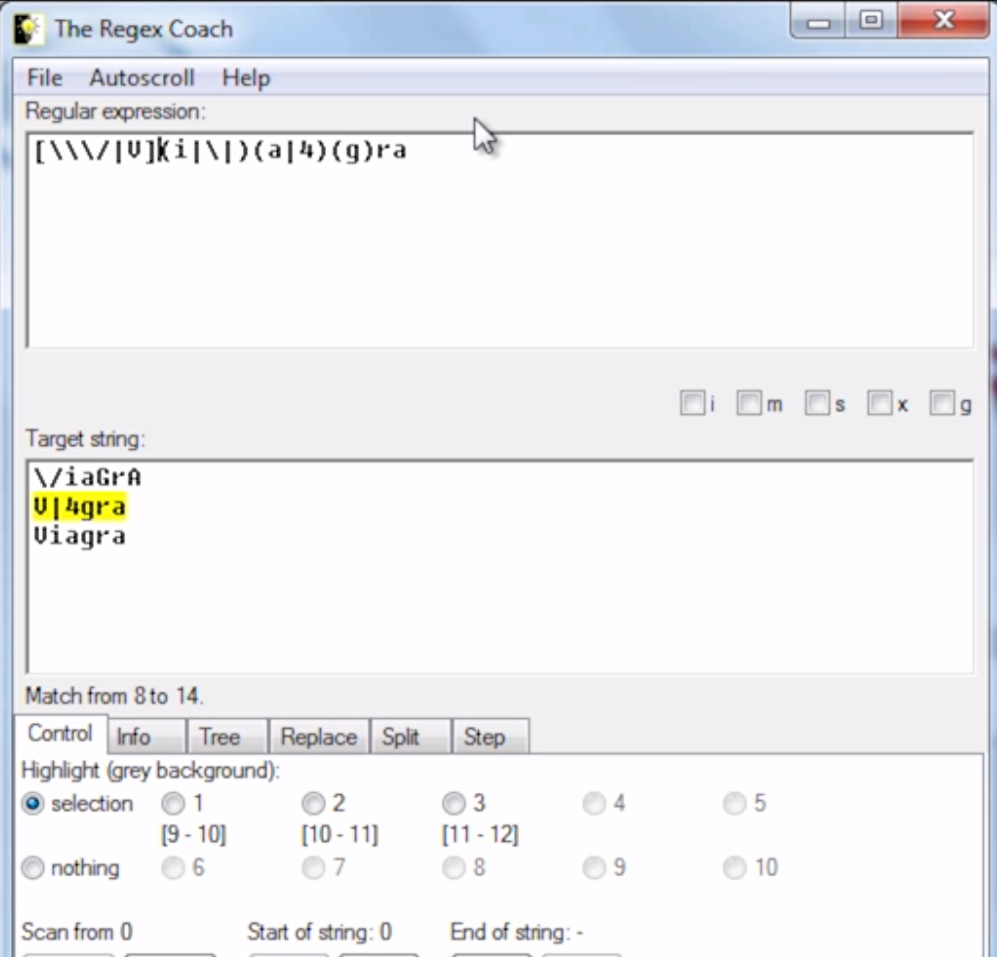

This week’s lectures were all about messaging security, specifically the techniques for identifying spam (unwanted or otherwise malicious emails) and filtering as much of it out while letting in all legitimate emails so as to not disrupt the normal flow of information for businesses and individuals.
In the first part of the 1st lecture we covered a phishing quiz made by McAfee, which would normally be found at this address: http://phishingquiz.mcafee.com/ , however at the moment the link simply redirects to McAfee’s homepage.
At the end of the quiz, regardless of results it displays the average score from users in each country. The average score in general is only 80%, meaning that out of a million spam emails, around a whopping 200,000 are mistaken as legitimate. This is why the field of spam filtering has been trying to rapidly improve, because due to the sheer volume of “attacks” per day, even a 99% accuracy is still too low.
There is some basic terminology that is inherent to the field that we might not have been aware of.
Spam/Ham - These are the terms for unwanted or malicious emails and the legitimate emails, respectively.
Spamtrap - This is just an area specific version of a honeypot, which we have covered in other areas of security including malware and web security. The idea is nearly identical, in this case a spam trap is an email that is intentionally made attractive to spam senders so that any common sources or techniques can be identified and used for later filtering.
Botnet - This is another term that we have covered in previous weeks, in general it refers to any collection of computers that have been taken control of are are being used to perform actions in mass that the original user is unaware of. In this area it would be for sending out large numbers of emails from more varied or more trusted sources to get past spam filtering.
Snowshoe spam - Similar concept to a botnet, the idea is to appear more legitimate, however instead of using a botnet you can simply use your own machines, the key is to limit the quantity of emails sent out from each device, as a sudden large spike in traffic from one source is a little obvious, so be spreading out the load (like a snowshoe does) the attacker can better hide from filtering.
Phishing vs Spear Phishing - Phishing, as covered in the week on web security, is an attack on the users instead of a system weakness where an email attempts to trick the user into following a link to a compromised site where malware can be installed or simply tricking the user into handing over sensitive data. Spear Phishing has also been covered previously, and is phishing targeted at specific groups or demographics.
RBL - An RBL, also called a real-time blackhole list, is a spam filtering technique where sources identified as spam senders are added to a list, and all received emails are put through the list, with matches being filtered out.
Heuristics - Heuristics is an additive rule list for spam filtering. This can range from specific string matching, giving weights to specific words to indicate a higher chance of spam, to even the exact layout of the email (where are links located in the message, how long in the introductory paragraph, length of subject, etc). All of this together forms a strong indicator of spam if the heuristics are well designed. Usually heuristics are created by training a program on a large number of pre-flagged examples of spam/ham.
Bayesian (Statistical) - The Bayesian method is one element of heuristics that was mentioned in all but name. This is the specific process where specific words or tokens are identified as being more common in spam or ham based on training samples.
The lectures then gave a quick history rundown, covering a few of the more notable examples of spam/phishing like the infamous 419 Phishing scam (also known as the Nigerian Prince scam). We also took a look at the various changes in spam botnet activity from 2009 - 2015. The most interesting thing to note is that there is a large fluctuation in activity, and during peak use the type of attacks/botnets differ extensively even only a couple years apart.
We then took a look at the technology and tools for combating spam. On the technology side, the focus was on reputation-driven versus content-driven filtering. Reputation driven filtering uses looks at the email address, the IP, or URL that the spam/ham came from and compares it to a database of known sources of spam. This is an effective reaction technique when used with tools like a Spamtrap or an RBL, however is it weak to techniques like Snowshoe spam. Content-driven filtering is designed to combat techniques that hide from reputation-driven filtering by looking only at the content of the messages to identify common spam formats and phrasing. The most extensive application of this is the use of heuristics, combinations of string and attribute meta rules, to filter massive amounts of spam with high accuracy regardless of the sender.
There are a number of useful tools for spam filtering, from open-source databases of source peputations like Trustedsource.org and Spamhaus.org, to tools that can parse information from an email to analyze like DIG (Domain information groper, investigation of DNS records), WHOIS (Searching for IP/Domain registration information), Grep, SED, and AWK (data parsing and manipulation).
Other tools include database access tools like PostgreSQL:
And pattern matching tools like Regex Coach which lets you practice with perl compatible regular expressions:

As mentioned previously, trained heuristics are a very powerful tool that are only limited by the quality of the research. The research process is the parsing of the data, grouping by timestamp, source_ip or cidr, subject, URL, other common elements, aggregating the values, and identifying the patterns and outliers. An important thing to keep in mind with research is the manual versus automation workload balance. You need to keep in mind how much human input is required over how much time, what quality assurances can be expected, and the expected value versus automation. With automation you need to keep in mind the initial human cost and what fault tolerance/resilience.